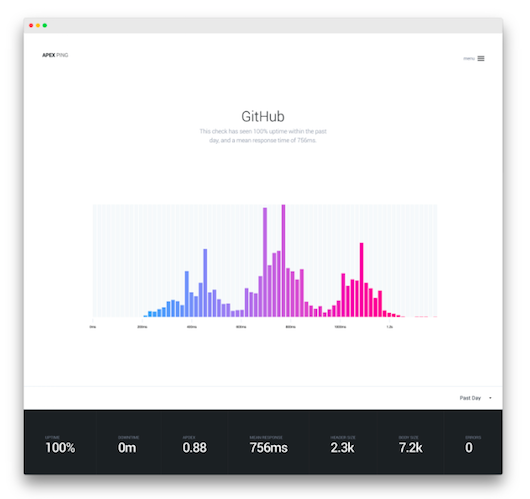
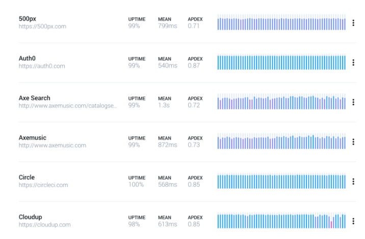

Introducing Apex Ping
I'd like to introduce Apex Ping! A minimalistic, but powerful uptime & performance monitoring service for websites and APIs. In this post I'll cover features of Apex Ping, why I chose to build it first, and a few things I learned in the process. In future posts I'll be detailing the implementation for anyone who is curious.
I soft-launched Ping about a month ago, built almost 100% on AWS Lambda with 500 users it has already detected over a million errors, and performed over 25 million checks. Big thanks to the early adopters who have checked it out!
. . .
The product
I've seen first-hand how embarrassing it can be when customers find out your product is having issues before you do, naturally this can translate to customers bailing on your product. Ensuring your site, app, or API is stable and performant is critical.
Apex Ping helps by making sure your team is notified when there's a performance regression, or when you end-point is down or unresponsive. Often people rely on "it works for me", but Apex Ping's report can help uncover the full story.
Powerful monitoring
Unlike some other uptime monitoring services, which only support HEAD requests, Apex Ping support header fields and bodies as well. This allows you to test APIs, caching behavior, and serving time, as well as the typical connection latency.
The checks listing displays the uptime, mean response, Apdex score, and Apdex score throughout the day, week, or month. The Apdex score generalizes the user experience, summarizing response time satisfaction and error responses.
Checks overview
Global Checks
Requests or "checks" are performed from a number of selectable PoPs (Point of Presence), giving you a glance at the customer experience all over the world. Hovering a PoP provides you with the breakdown, and coloring indicates their relative health so you can instantly see if a region's availability or performance is degraded.

Geographical view
Latency distribution
When latency is a reflection of the user-experience, it's important not to ignore the outliers. The Latency view provides you with an intuitive look at distribution throughout the selected time period, where the intensity of the heatmap represents the number of check's within the given duration.

Latency heatmap
Errors & Apdex
The Apdex (Application Performance Index) score quantifies the user-experience based on a configured target latency. It effectively lets you know how far you are from hitting your mark, you should strive for a perfect 1.0!